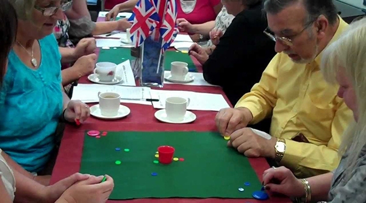

The University of Otago Tiddlywinks Club
How TiddlyWinks Is Played(Adapted from wikipedia)
The Rules
Tiddlywinks is a game for four players, playing in partnerships, though it is often played between two opponents, each playing the role of two partners. Each player controls the winks of one colour, the colours being blue, green, red and yellow. Red and blue are always partners against green and yellow. There are six winks of each colour, which begin the game in the corners of a felt mat measuring 6 feet by 3 feet. This mat is usually placed on a table, and a pot is placed at its centre.
The players take turns, and there are two basic aims: to cover (or squop) opponent winks, and to get one's own winks into the pot. As in pool or snooker, if a player pots a wink of his own colour, then he is entitled to an extra shot, and this enables a skilled player to pot all of his winks in one turn. The point of squopping, which is the key element distinguishing the adult game from the child's game (though recognized in even the earliest rules from 1890), is that a wink that is covered (even partially) may not be played by its owner. The wink on top may be played, though, and top-level play involves sophisticated shots manipulating large piles of winks.
The game ends in one of two ways; either all the winks of one colour are potted (a pot-out), or play continues up to a specified time limit (usually 25 minutes), after which each colour has a further five turns. Then a scoring system is used to rank the players, based on the numbers of potted and unsquopped winks of each colour.
Some Terms
- Blitz:
- An attempt to pot all six winks of a player's colour early in the game
- Bomb:
- To send a wink at a pile, usually from distance, in the hope of significantly disturbing it
- Boondock:
- To free a squopped wink by sending it a long way away, leaving the squopping wink free in the battle area
- Bristol:
- A shot which moves a pile of two or more winks as a single unit; the shot is played by holding the squidger at a right angle to its normal plane
- Carnovsky (US)/Penhaligon (UK):
- Potting a wink from the baseline (i.e., from 3 feet away)
- Cracker:
- A simultaneous knock-off and squop, i.e. a shot which knocks one wink off the top of another while simultaneously squopping it
- Crud:
- A forceful shot whose purpose is to destroy a pile completely
- Good shot:
- Named after John Good. The shot consists of playing a flat wink (one not involved in a pile) through a nearby pile with the intent of destroying the pile
- Gromp:
- An attempt to jump a pile onto another wink (usually with the squidger held in a conventional rather than Bristol fashion)
- John Lennon memorial shot:
- A simultaneous boondock and squop
- Lunch:
- To pot a squopped wink (usually belonging to an opponent)
- Scrunge (UK):
- To bounce out of the pot
- Squidger:
- The disc used to shoot a wink
- Squop:
- To play a wink so that it comes to rest above another wink
- Sub:
- To play a wink so that it ends up (unintentionally) under another wink